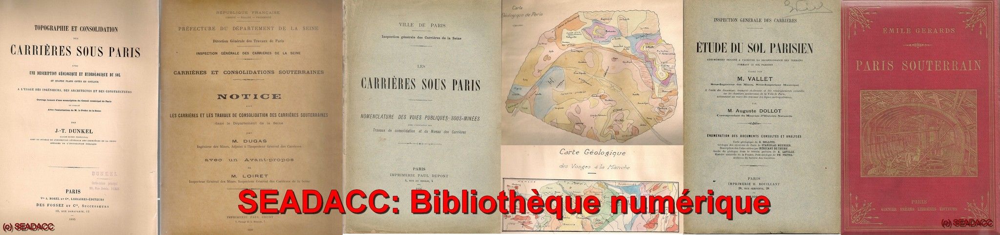

La SEADACC vous présente ici une collection d'ouvrages libres de droits. Attention, même libre de droits , l'utilisation de documents est encadrée par la loi: vous devez faire mention de l'auteur ou/ et de l'éditeur du document ainsi que la source si elle est connue.
EN CONSTRUCTION